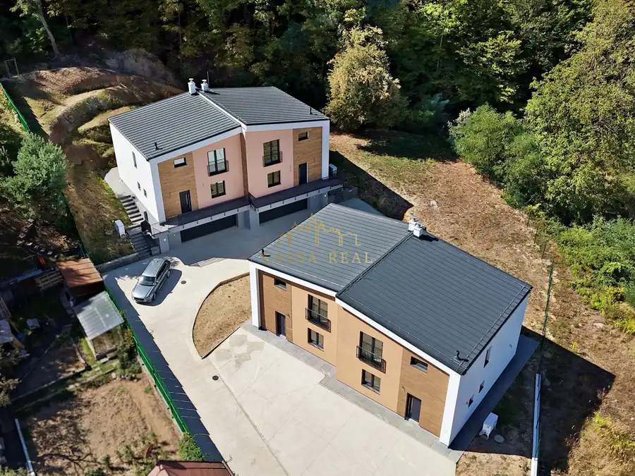
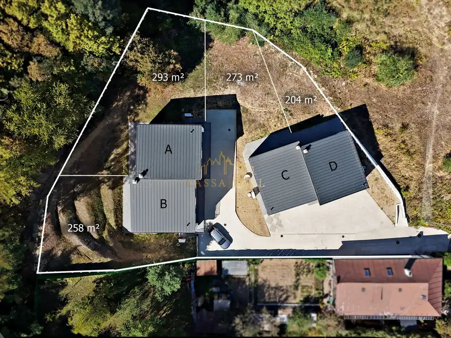
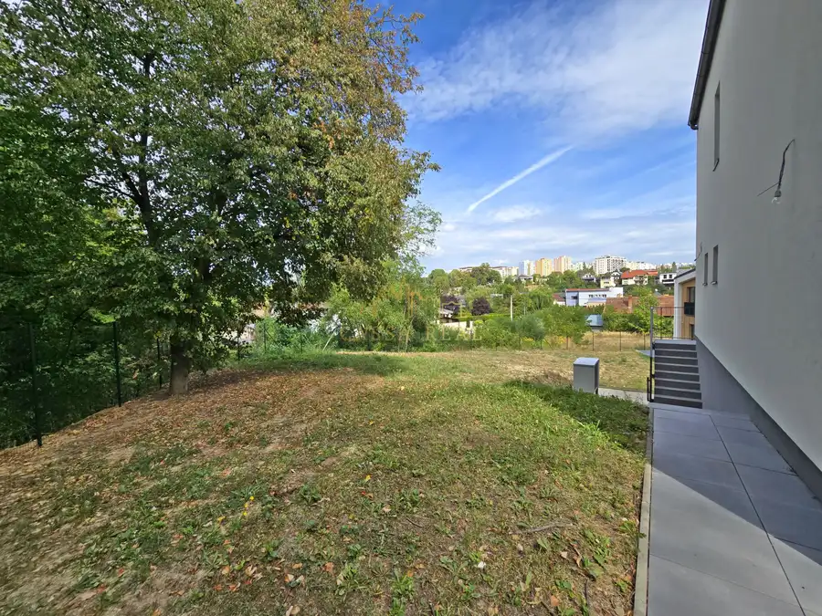
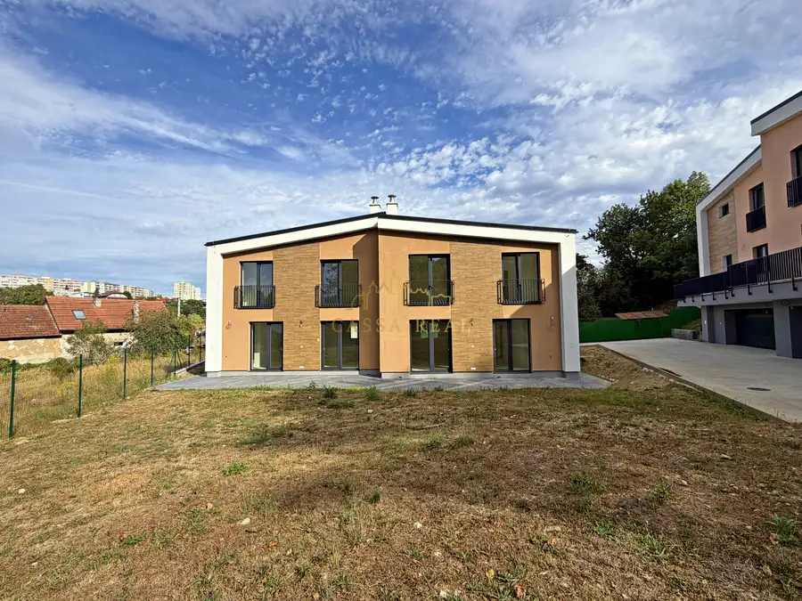
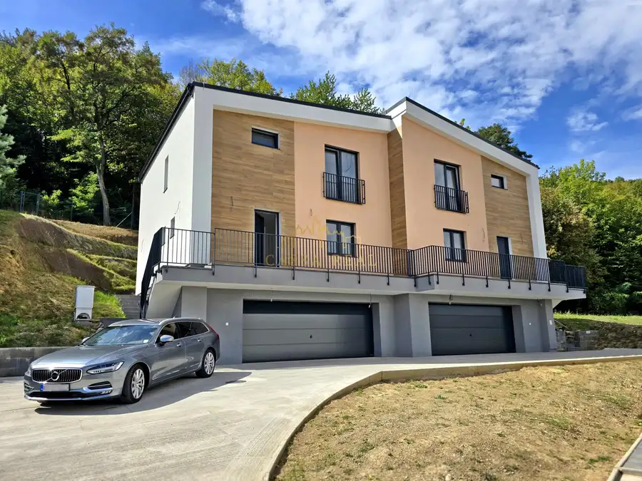
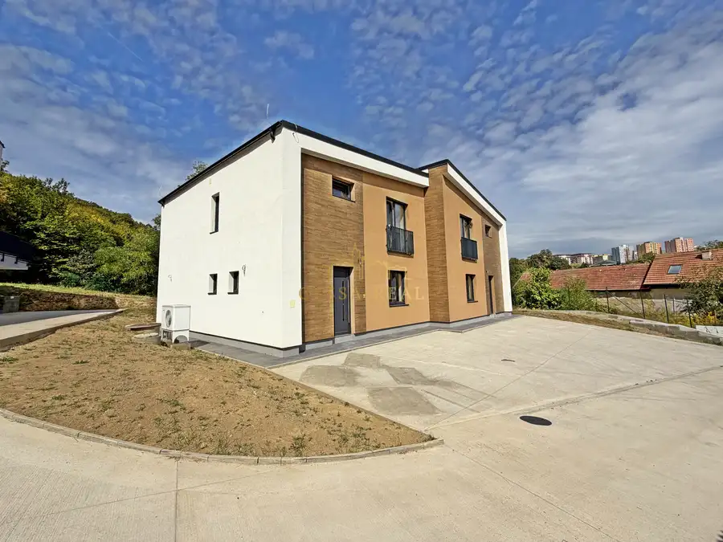
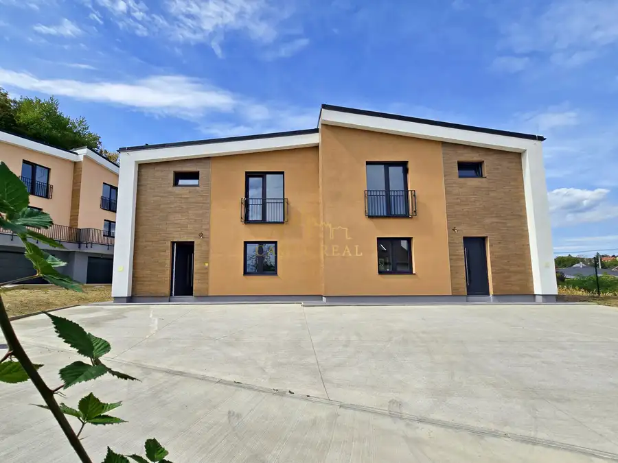
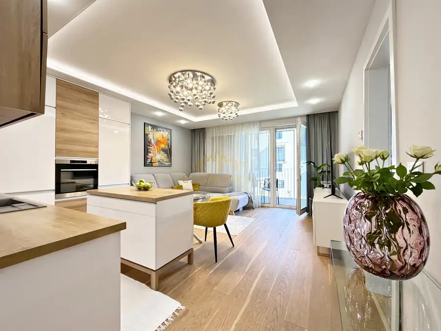
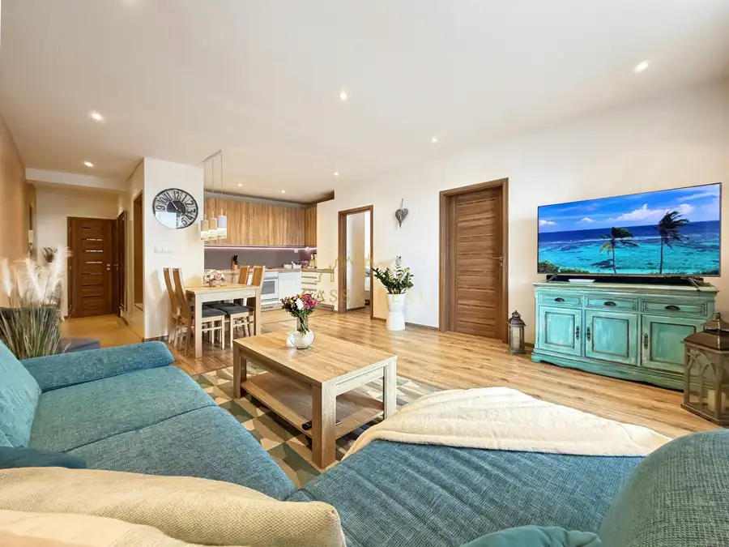
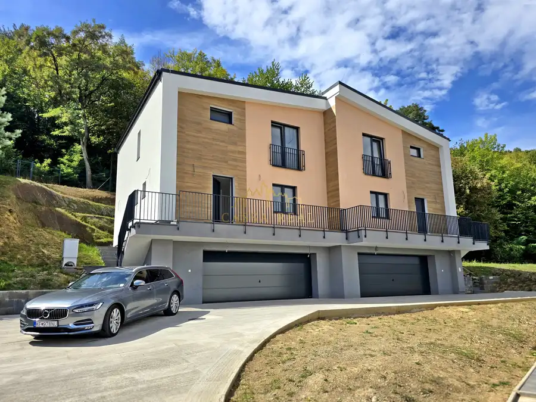

NOVÝ 4-izb. RODINNÝ DOM pod lesom / 132 m² + ZÁHRADA / Myslava – Pod Hrabinou
Myslava, Košice







- Plocha132 m²
- StavNovostavba
- VlastníctvoOsobné
- Energetická triedaA
O nehnuteľnosti
Exkluzívne Vám predstavujeme nový koncept rodinného bývania v mestskej časti Myslava – moderný 4-izbový nízkoenergetický rodinný dom s vlastnou záhradou a 2x parkovacím státím, ktorý je súčasťou novostavby moderného dvojdomu v tichej ulici.Bývanie pod lesom - spája komfort a súkromie vlastného rodinného domu s príjemnou atmosférou pokojnej lokality obklopenej prírodou, na skok od mesta.Pod Hrabinou je miesto pre tých, ktorí nechcú robiť kompromis medzi mestom a prírodou, chcú bývať v pokojnom prostredí, no zároveň nechcú stratiť pohodlie mesta. Dom ponúka veľkorysý priestor pre rodinný život, pekné výhľady a príjemnú atmosféru pokojnej lokality, pričom do centra Košíc sa dostanete približne za 10 minút autom.ZÁKLADNÉ ÚDAJE• podlahová plocha domu 132 m²• 2 obytné podlažia• zastavaná plocha 85 m²• terasa 20 m²• vlastný pozemok so záhradou: Dom C: 273 m² / Dom D: 204 m²• 50 % podiel na príjazdovej komunikácii a pozemku pred domomDom bol dokončený v roku 2026, je riadne skolaudovaný a ponúka sa v stave holodomu – pripravený na dokončenie interiéru presne podľa Vášho vkusu a predstáv.SIETE• mestský vodovod• kanalizácia• elektrická prípojka 230/380 V• optické internetové pripojeniePRIESTOR PRE CELÚ RODINUPremyslená dvoj-podlažná dispozícia prirodzene oddeľuje dennú a nočnú časť. Dominantou domu je veľkorysá obývacia izba prepojená s kuchyňou s výmerou približne 41 m². Prirodzene na ňu nadväzuje 20 m² terasa orientovaná do záhrady – ideálne miesto na rannú kávu, rodinné raňajky alebo večerné posedenie.Kuchyňa disponuje vlastnou komorou, pričom dispozícia umožňuje aj jej prípadné zväčšenie.Nočná časť ponúka tri samostatné izby – komfortnú spálňu, pracovňu a detskú izbu. Súčasťou dispozície je veľká rodinná kúpeľňa s priestorom pre vaňu aj sprchovací kút a dve samostatné WC.NÍZKOENERGETICKÝ KOMFORTO príjemný teplotný komfort počas celého roka sa stará tepelné čerpadlo zn. Stiebel Eltron so zásobníkom TÚV v kombinácii s teplovodným podlahovým vykurovaním aj chladením. Kvalitné posuvné okná s izolačným trojsklom, predpríprava na vonkajšie elektrické žalúzie a smart domácnosť vytvárajú základ moderného a komfortného bývania.Dom má energetický certifikát A0 a predpokladané náklady na energie sú do 100 € mesačne.ZÁHRADA, TERASA, SÚKROMIETerasa s výmerou 20 m² smeruje do budúcej záhrady a prirodzene prepája interiér s exteriérom pod lesom. Pozemok je pripravený na dokončenie podľa predstáv nového majiteľa. Vytvoriť si môžete vlastnú záhradu, zeleň, oddychovú zónu či priestor pre rodinné chvíle.MYSLAVA – MIESTO, KTORÉ MÁTE NA DOSAHPod Hrabinou ponúka vzácnu kombináciu pokojného bývania a dostupnosti mesta. V pešej dostupnosti máte základnú a materskú školu, potraviny, obchody, detské ihrisko, kostol, autobusovú zastávku. Do centra Košíc sa pohodlne dostanete za 10 minút autom.A keď sa vrátite domov, ruch mesta zostane vždy za Vami :)VÝHODY:———————– Vodovod + Kanalizácia– Tepelné čerpadlo– Vlastný pozemok / Záhrada pod lesom– kúpeľňa s vaňou aj sprchovým kútom– 2 x WC– Východ na terasu– Kuchyňa s komorou– Parkovanie pre 2-3 vozidlá – Tichá ulica pod lesom– Do centra 10 min. Pod Hrabinou - Bývanie pod lesom, kde má pokoj svoje miesto.—————————————CENA / Dom C / 460.000 €—————————————CENA / Dom D / 440.000 €—————————————Cena je už vrátane kompletného právneho servisu. S hypotékou či financovaním Vám radi poradíme aj pomôžeme.Viac INFO Vám rád poskytne:Andrej ĎURICASenior Realitný Maklér - CASSAREAL0911078864durica@cassareal.sk—————————————————————-= CassaReal / Nájdeme Vám domov =-—————————————————————
Parametre
- Druh
- Rodinný dom
- Dátum zverejnenia
- 27. 09. 2026
- Energetická náročnosť
- Nízkoenergetický
- Energetický certifikát budovy
- A
- Energie
- 100
- Orientácia
- Západná, Východná
- Plocha pozemku
- 273 m²
- Plocha terasy v m2
- 20 m²
- Počet izieb / miestností
- 4
- Počet nadzemných podlaží
- 2
- Rok kolaudácie
- 2025
- Rok poslednej rekonštrukcie
- 2026
- Rok výstavby
- 2025
- Stav nehnuteľnosti
- Novostavba
- Telekomunikácie
- Internet, Optická sieť
- Terás
- 1
- Terén pozemku
- Rovinatý
- Typ
- Predaj
- Typ konštrukcie
- Tehlová
- Vlastníctvo
- Osobné
- Vybavenie
- Terasa, Pivnica, Verejné parkovanie, Sklad
- Vykurovanie
- Ústredné, Podlahové
- Zariadenie
- Holopriestor
- Zastavaná plocha
- 85 m²
- Úžitková plocha
- 132 m²
Kde to je


Mohlo by Vás zaujímať

BytNové 329 000 €KRÁSNY nadštandardný 2-izb. byt 54 m² + 12 m² Terasa / NOVÁ TERASA / Súľovská ul. Západ, Košice 2-izbový54 m²2. podlažie
BytNové 299 900 €Moderný 3-izb. TEHLOVÝ byt 67 m² + 7 m² balkón + klíma + parking | PANORÁMA – Košice Vyšné Opátske, Košice 3-izbový67 m²1. podlažie
DomNové 499 000 €NOVÝ moderný 4-izb. DOM 132 m² pod lesom / Garáž 50 m² + Záhrada / Myslava - Pod Hrabinou Myslava, Košice 182 m²